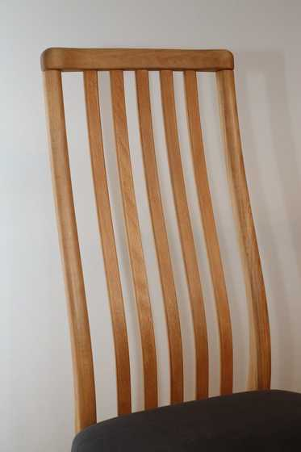
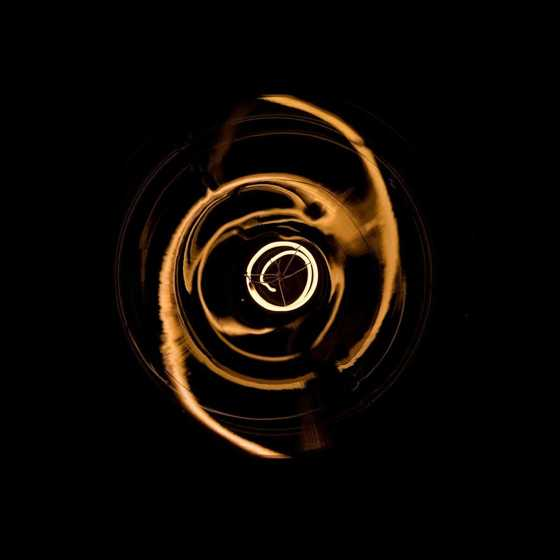

ABOUT
お店の由来と想い
- 店主さんが「63歳からの新たなスタート」として開業したお店です(Instagramプロフィールより)。
- お客様がゆっくり過ごせる場所にしたい、という思いが添えられています(同上)。
- ドリンクと軽食を、朝7時から夕方4時まで提供しています(同上)。
- 2025年1月のオープンと紹介されています(口コミサイトの記載)。
「悠遊」は一般に、ゆったりと気ままに楽しむことを表す言葉です。店名の由来についてお店からの公表は確認できていないため、ここでは言葉の意味から受けた制作側のイメージとして、朝の静かな時間をのんびり過ごす場所、として紹介しています。




MENU
ドリンクと軽食
提供内容はドリンクと軽食です。ブレンドコーヒーやぜんざい、バスクチーズケーキを楽しまれたという声が紹介されています(口コミ・ブログ記載)。メニューの品目・価格・モーニングの内容は準備中です。
| ドリンク | 準備中 |
|---|---|
| 軽食 | 準備中 |
| 甘味・ケーキ | 準備中 |
| 営業時間 | 準備中 |
| 定休日 | 準備中 |


VOICE
口コミ(イメージ例)
イメージ例
朝早くから開いているので、散歩のあとにふらりと立ち寄れました。静かで落ち着きます。
イメージ例
窓の光が心地よく、本を読みながらコーヒーを飲む時間がぜいたくでした。
イメージ例
急かされない雰囲気で、のんびり過ごせました。また朝に来たいです。
上記は制作側が創作したイメージ例で、実在のお客様の声ではありません。